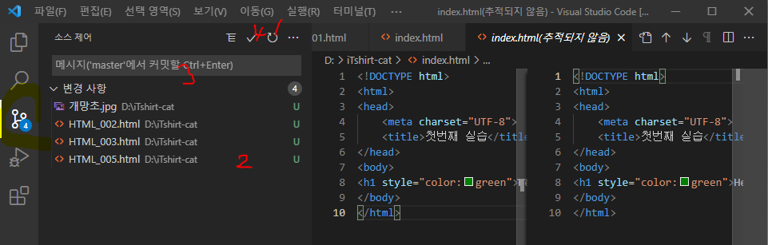
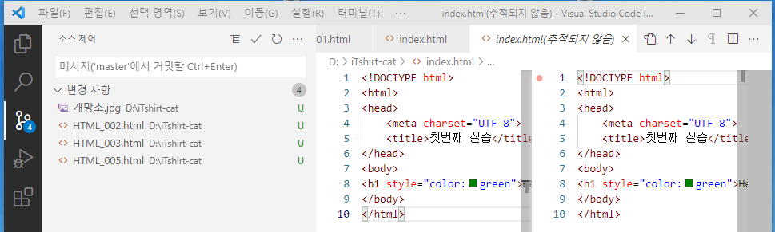

Ctrl + Alt + 화살표 위 또는 아래
한글설치 : Korean Languange Pack for Visual Studio Code
브라우저 : open in browser
마크다운 : Markdown All in One
추천 5종 팩
. Auto Close Tag : 태그 자동 입력 (<>, </>)
. HTML Snipper : <> 없어도 태그 완성 : 꺽쇠 없이 div 후 엔터키
. Live Server : 자동 저장 기능
. Material Icon Theme : 언어별 아이콘 부여
. Prettier : 코드 배치 이쁘게
탐색기
검색
소스제어(Git)
실행 및 디버그
확장 (마켓플레이스)

Refresh : 소스제어에서 어떤 것들이 바뀌었는지 확인
필요한 파일 Staging Area로 이동
커밋 메시지 작성
커밋 : 전후 파일 내역이 동일해짐
파일 - 기본설정 - 색테마
